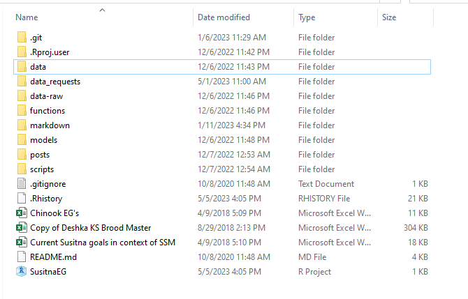
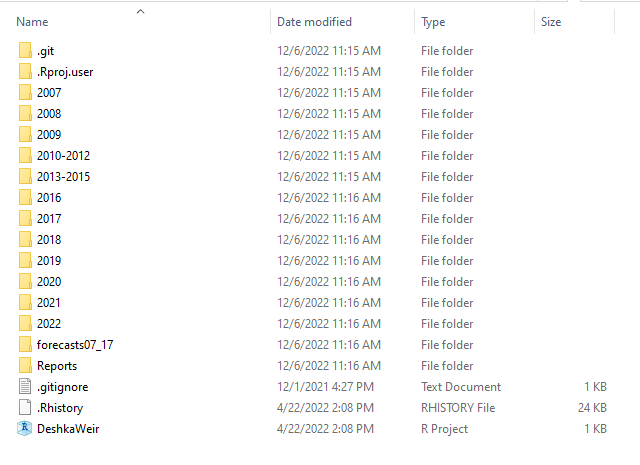
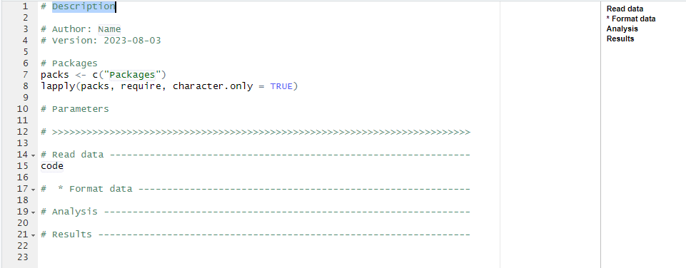

#example
age <- 48R Best Practices for ADF&G Biometricans
This document outlines coding best practices in R for biometricians and quantitative biologists within ADF&G, with the hope that a common framework will facilitate collaboration and code review. The main objective is to make code easily readable, understandable, and reproducible. A second objective is to give all ADF&G staff members a common starting point while learning to use R to achieve their job responsibilities. Coding best practices work in tandem with the Department’s operational planning and reporting polices to facilitate reproducible research.
Conventions used in this document
When point and click sequences are referenced in this text, the sequence will be enclosed in “quotations”. Button names will be shown in italic. Button names in the point and click sequence will be separated by the greater than symbol (>). Any actions required will be described using italics enclosed in parentheses, such as (italics enclosed in parentheses). For example, reference the following point and click sequence: “Button name > Button name > (Required action described)”. Keystrokes will be described with regular font enclosed in quotations, e.g., “Control+Shift+R”.
Example R scripts will be shown in code blocks:
R commands in the text below will be shown using inline code blocks (e.g. <-).
R and Rstudio Best Practices
Use RStudio Projects:
- To create a new RStudio project: “File > New Project… > New Directory > New Project > (Provide a Directory name and location) > Create Project”.
- Checking the box next to “Create a git repository” will initialize a git repository in the project directory.
- Checking the box next to “Use renv with this project” will create a package environment for your project, which will protect your analysis from package updates and retirements.
- RStudio projects make file paths within the project relative to the location of the RStudio project file (.Rproj). This provides stability because relative file locations (e.g.,
"./raw data.xlsx") will not break if the project folder is moved to a new location.- This approach is more stable than absolute paths created using
setwd(). Use ofsetwd()should be reserved for sharing small pieces of code in situations where the code will not be further developed. - Refer to the RStudio tips and tricks section below to learn more about file paths.
- This approach is more stable than absolute paths created using
- To create a new RStudio project: “File > New Project… > New Directory > New Project > (Provide a Directory name and location) > Create Project”.
Don’t save your work environment:
- To ensure your work environment is never saved when exiting RStudio, go to “Tools > Global Options > Save workspace to .RData on exit, (Change selection to ‘Never’)”.
- This practice ensures programming errors are not masked by orphaned objects in your workspace.
- If the analyses are lengthy, complex, or time consuming, the deliberate practice of saving specific output files, which can be sourced later, is more stable.
Use a consistent folder structure within each RStudio project:
- Project/Analysis name
- scripts – This folder contains the R scripts used to perform fisheries analysis.
- data – This folder contains any data sets used in the project or analysis and any code required to prepare the data for analysis.
- The raw data file for the project should be a read-only file (i.e. never adjust the contents of a raw data file). If changes are required, they should be done via code prior to the analysis. If errors are located, they should be communicated back to the database manager for correction.
- If data are confidential, write a comment in the script explaining how to call the data, where it is stored on an ADF&G server, or whom to contact.
- reports – This folder contains FDS reports, operational plans, and any other documents associated with the analysis.
- README file – This file stored in the main project directory can be very helpful for orienting a new user.
- You can add to this basic structure with additional folders such as: functions (R scripts containing functions, which can be sourced when needed in other scripts), output (summary tables, .csv files, Excel files, JAGS posteriors, .RData files, simulation objects, figures, etc.), R Markdown (R Markdown files and outputs), Quarto (Quarto files and outputs), literature (references that are pertinent to the project), and models (statistical model scripts).
- Multiple year analyses are generally set up such that there is a separate folder for each year, within which resides the above folder structure (e.g., 2019 folder contains scripts, data, and reports folders).
- This practice helps to create a common framework to facilitate collaboration, code review, and the reproducibility of projects.
- Project/Analysis name


Use informative headers:
- For better understanding among multiple staff (current and future) and long-term maintenance of analyses, each script should begin with a header that includes at least the following information:
- Synopsis of what the code does and which project uses the code pertains
- Author
- Date of creation
- Other information a new analyst might find helpful: required packages, parameter names/descriptions, major modification history, dependencies, etc.
- Refer to the RStudio tips and tricks section below to learn about using snippets to create informative headers.
- For better understanding among multiple staff (current and future) and long-term maintenance of analyses, each script should begin with a header that includes at least the following information:
# Find the most common words and word pairs in the DSF Gotham Culture survey results.
# Author: Adam Reimer
# Version: 2023-05-05
# Packages
packs <- c("tidyverse", "stringr", "tidytext", "textdata", "ggraph")
lapply(packs, require, character.only = TRUE)
# Note: The data associated with the project is stored outside of this repository to protect employee privacy.
# >>>>>>>>>>>>>>>>>>>>>>>>>>>>>>>>>>>>>>>>>>>>>>>>>>>>>>>>>>>>>>>>>>>>>>>>>>>>>Use a standard template for your script:
- Following a general coding template will help us all read eachother’s code:
- Header
- Required packages
- Read data/Clean data
- Analysis
- Write/Save output figures and tables
- Refer to the RStudio tips and tricks section below to learn about snippets to create a standard template and about using outlines to organize your R script.
- Following a general coding template will help us all read eachother’s code:
Have a naming convention for local variables, global variables, constants, and functions:
- Keep names short but descriptive. Meaningful and understandable variable and function names help collaborators differentiate items in the coding environment. In general, variable names should be nouns and function names should be verbs.
- The best naming convention will vary depending on the application. The most important thing is to be consistent within each script and/or project. On large projects, a glossary of parameter names can help keep the naming convention understandable.
- Rename/reformat columns, as needed, immediately after importing data.
- Do not use the same name for multiple purposes. For example, variables with the same name in global and local environments can lead to confusing results.
- Avoid numbers in variable names unless they are informative.
- E.g., length500 for a variable that contains the number of fish greater than 500 mm in length is informative.
- Incremental names are not informative (e.g., using S1, S2, and S3 as variables containing the number of fish greater than 300 mm, 400 mm, and 500 mm). If incremental names are used, their meaning should be described in comments.
- Use consistent parameter names in the code and the methods of the associated report.
- Refer to the RStudio tips and tricks section below to learn about the
clean_names()function and a tip about capital letters in object names.
Indentation and whitespace:
- Proper indentation and judicious use of whitespace (e.g., spaces between sections) are very important in enhancing the readability of the code.
- Be consistent throughout the entire script.
- Refer to the RStudio tips and tricks section below to learn tips for including whitespace, see an example of having proper indentation and a judicious use of whitespace, and to learn a tip about reindenting or reformatting code.
Code should be well documented:
Commenting makes your code more understandable.
Comments should be brief, relevant, and used conservatively within the script.
Examples of places to comment code:
- Adding links to the origin of copied code and/or to credit the original author
- Explaining a complex piece of code
- Stating obscure packages used in the R script and explaining the functionality they provide
- Explaining what a block of code or what each step of a pipe does
- Adding details about units, precision, or the treatment of null values
- For example: Instead of naming a variable catch_kg, make a comment at the beginning of the script that catch is in kg unless otherwise stated, and then name the variable catch.
- To document changes from previous years
- Document major updates and issues
- The simplest way to document major updates is to include a modification history in the header (e.g., May 2022: changed the statistical analysis to consider year).
- Git/GitHub is a great tool to track updates, note future code improvements, and report issues. See ADFG-DSF/Git_book: A Quarto Book describing best practices for Git use at ADF&G (github.com) for more guidance on using GitHub.
Write functions for repetitive tasks:
- Whenever possible, write universal functions for small discrete tasks.
- If you have many functions, place them all into one script and source that script in your main code.
- An extension of this practice is to write utility scripts for larger discrete tasks and then source those scripts in your main code.
- This practice reduces the clutter of the script containing the main analysis so that the main code is easier to follow.
- Whenever possible, write universal functions for small discrete tasks.
Format dates using the international date/time standard format (ISO 8601):
- Dates regularly cause errors. Format all date columns into the international standard format (ISO 8601), which is yyyy-mm-dd, at the beginning of a script to avoid problems later in the analysis.
Use Quarto or R Markdown:
- When appropriate, use Quarto or R Markdown to generate output documents in Word, PDF, and html formats. Using Quarto or R Markdown allows you to produce high-quality, self-contained output documents directly from code, reducing the likelihood of copy and paste or version errors. Using Quarto or R Markdown is also efficient since you can easily regenerate the entire output following a data update or modification of the code.
- To create a new Quarto document: “File > New File > Quarto Document… > Document or Presentation or Interactive > (Pick the type of document/presentation to create and type in a Title for the document/presentation; Pick the Engine and Editor as well if need be) > Create”.
- To create a new R Markdown document: “File > New File > R Markdown… > Document or Presentation or Shiny or From Template > (Pick the type of document/presentation to create, type in a Title for the document/presentation, and check or uncheck box about using current date when rendering document; Or pick the template to use) > OK”.
RStudio tips and tricks
RStudio can provide a script outline with navigation
- Insert section names such as
Read dataorFormat datausing the keyboard shortcut “Control+Shift+R”. These names will appear in your script as a comment with a separator following the name.- Section names can also be typed in using at least one hash sign, then the section name, and then at least 4 dashes or equal signs. For example,
# Load data ----or## Format data ====would both create a section name. - You can create subsections by preceding your section name with
*or sub-subsections by preceding your section name with**.
- Section names can also be typed in using at least one hash sign, then the section name, and then at least 4 dashes or equal signs. For example,
- Section names are visible in an outline. This outline can be accessed by clicking the button with 5 horizontal lines at the top right corner of the source pane in RStudio. Section names in the outline can be clicked on to navigate through a lengthy piece of code.
- Insert section names such as
RStudio snippets can be used to insert a standard header and code template in a new R script.
- To create a header/code template snippet, go to “Tools > Edit Code Snippets… > (Paste the following rscript snippet at the bottom of the pop-up) > Save”.
snippet rscript # ${1:Description} # Author: ${2:Name} # Version: `r Sys.Date()` # Packages packs <- c("${3:Packages}") lapply(packs, require, character.only = TRUE) # Parameters # >>>>>>>>>>>>>>>>>>>>>>>>>>>>>>>>>>>>>>>>>>>>>>>>>>>>>>>>>>>>>>>>>>>>>>>>> # Read data --------------------------------------------------------------- ${4:code} # * Format data ---------------------------------------------------------- # Analysis ---------------------------------------------------------------- # Results ------------------------------------------------------------------ To use the rscript snippet, type
rscriptslowly in a blank R script and hit “Enter” when the command auto-completes. A standard header and code template will be added to your script with the cursor placed where the code description should be entered (see Figure 2). After you have entered an appropriate description, pressing the “Tab” key will take the cursor to the area where the author’s name should be entered. A third “Tab” keystroke will take the cursor to the area where packages can be specified, and a forth “Tab” keystroke will take the cursor to the section where you can begin writing your code. Notice the snippet creates section names and the associated preliminary outline.

You can specify package names (e.g.
dplyr::renamevs.rename) when using uncommon functions to make the dependency clear and/or avoid conflicts between packages.Use pipes (
%>%or|>) to chain together multiple, related operations where the intermediate steps are of little interest. Note that the piping operator%>%requires thedplyrpackage to be loaded, whereas the native piping operator|>requires no packages to be loaded.The
clean_names()function in thejanitorpackage is an easy way to rename all columns consistently.Object names in R are case specific. Use capital letters sparingly if at all. It can be difficult to remember arbitrary capitalization in variable and function names.
Use
<-(not=) for object assignments. This helps distinguish object assignments from passing values/objects to function arguments. Make sure to use=(not<-) in function arguments to avoid making “accidental” objects.Use
TRUEandFALSE, notTorF(the latter can be reassigned, the former cannot).Place spaces around all binary operators (
=,+,-,<-, etc.). Do not place a space before a comma, but always place one after a comma. Place a space before a left parenthesis or left curly bracket, except in a function call. There should be a hard return after pipe operators.# An example of R script spacing human_age <- function(dog_age) { # args: dog_age = the age of a medium-sized dog in years # return: the equivalent human age (in years) for the dog # from https://www.akc.org/expert-advice/health/how-to-calculate-dog-years-to-human-years/ stopifnot(dog_age >= 0, dog_age <= 20) output <- if(dog_age <= 2) { dog_age * 12 } else { 24 + (dog_age - 2) * 5 } output } # An example of hard returns in a pipe sequence data %>% mutate(...) %>% ggplot(...)RStudio can automatically reformat your code. Go to “Code > Reformat Code”. The keystroke shortcut is “Ctrl+Shift+A”.
The autocomplete functionality in RStudio is a great way to avoid misspelling functions, data objects, and file paths.
R abides by the Unix standard of using forward slashes (/) to navigate directories, while Windows systems use backward slashes (\). R has trouble parsing character strings with a single backward slash. So if you are using a Windows pathway in an R object, one option is to convert backward slashes to forward slashes (e.g., change
read.csv(".\data.csv")toread.csv("./data.csv").When typing file paths,
"/"refers to your root directory (e.g., C drive if working locally on a Windows machine),"./"refers to your current working directory (location of your .Rproj file),"../"refers to the parent directory,"../../"to the grandparent, and so on. Theherepackage is an option to simplify relative file paths.You can comment out multiple lines of code in RStudio by highlighting and pressing “Ctrl+Shift+C”.
Resources
Although this document was based on recommendations from ADF&G employees, many of the recommendations were summarized from outside resources including: